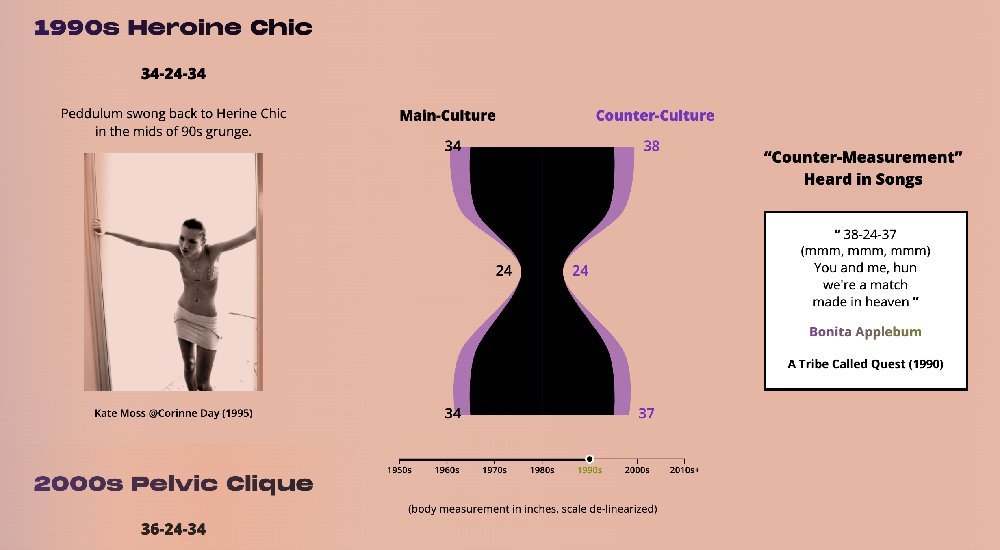
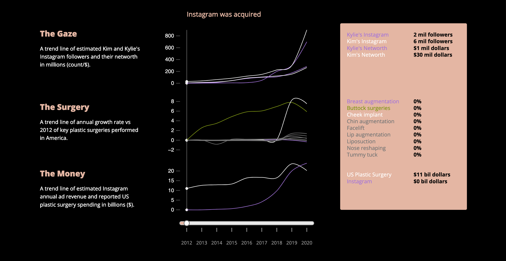

This is my final project "Illusions" at the Data Vis & Info Aesthetics class during my study at the MS Data Visualization program at Parsons School of Design.
Slim Thick is an uncommon female body type that consists of a flat stomach, toned thighs, and a large bottom that originated from a voluptuous body form celebrated as a counterculture over seven decades ago, and was eventually adopted and popularized by influencers, most notably the Kardashians in conjunction with the rise and dominance of social media.

(Seven decades of female body idealization through the lens of pop culture)
The idealization of the Slim Thick body type is a phenomenon that can be attributed to the continuation of the historical male gaze, capitalist exploitation of the Black female body, all against the backdrop of algorithmic reinforcement of the social media and the growing normality of plastic surgery.

(Correlation of social influence and financial growth in the context of the Slim Thick body idealization)
Slim Thick, The United Curves of America
Data Storytelling
The data story traces back seven decades of idealization of the female body through the lens of pop culture. The main thread of concept is an optical illusion signifying the male gaze, with the negative space resembling the outline of the Slim Thick body.
Stats on the revenue growth of social media and plastic surgery, particularly Brazilian Butt Lift, were compared side by side with the Kardashians' ever dominating social influence in the past decade.
Tools I used
- d3.js
- HTML5/CSS
- sticky scroll
- scrollama